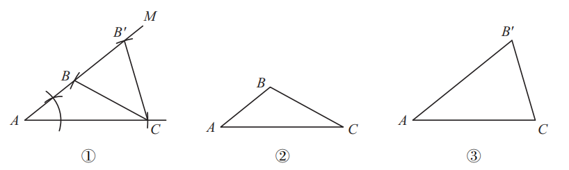
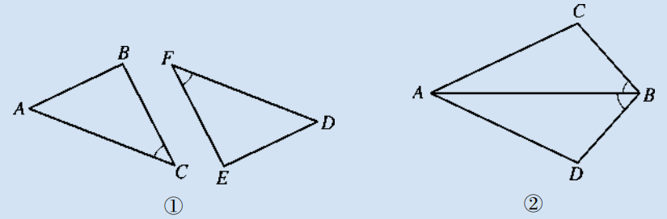
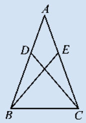
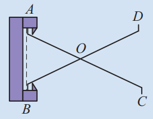

上一节我们已知，仅一组或两组元素相等不能判定全等。当三组元素相等时，有四种情况：两边一角、两角一边、三角、三边。
本节先研究两边一角，它有两种情形：两边及其夹角（边角边）和两边及其中一边的对角（边边角），如图12.2.1。那么，这两个三角形一定全等吗？
如果两个三角形有两边及其夹角分别相等，那么这两个三角形会全等吗？为此我们以已知的两条线段和一个角为三角形的两边及其夹角，作三角形，看看你和同伴作出的三角形是否全等。
做一做 如图12.2.2，已知线段$b,c$和$\angle \alpha$，试作$\triangle ABC$，使$AB=c$，$\angle A=\angle \alpha$，$AC=b$。
把你作的三角形与其他同学作的三角形进行比较，它们全等吗？换两条线段和一个角试试，是否有同样的结论？
通过比较可以发现，所有同学作出的三角形都能完全重合，即它们全等。这说明两边及其夹角分别相等时，两个三角形全等。
下面我们用叠合的方法，看看你和同伴所作的两个三角形是否可以完全重合。
如图12.2.4，在$\triangle ABC$和$\triangle A'B'C'$中，已知$AB = A'B'$，$\angle A = \angle A'$，$AC = A'C'$。
由于$AB = A'B'$，我们可以移动$\triangle ABC$，使点$A$与点$A'$、点$B$与点$B'$重合。因为$\angle A = \angle A'$，所以可以使$\angle A$的另一边$AC$与$\angle A'$的边$A'C'$重叠在一起，而$AC = A'C'$，因此点$C$与点$C'$重合。于是$\triangle ABC$与$\triangle A'B'C'$重合，这就说明这两个三角形全等。
由此可得判定三角形全等的一个基本事实：
两边及其夹角分别相等的两个三角形全等。（简写成“边角边”或“SAS”）
如图12.2.5，线段$AC$、$BD$相交于点$E$，$AE = DE$，$BE = CE$。求证：$\triangle ABE \cong \triangle DCE$。
证明：
在$\triangle ABE$和$\triangle DCE$中，
$AE = DE$ (已知)，
$\angle AEB = \angle DEC$ (对顶角相等)，
$BE = CE$ (已知)，
$\therefore \triangle ABE \cong \triangle DCE$ (SAS).
如图12.2.6，有一池塘。要测池塘两端$A$、$B$间的距离，可先在平地上取一个可以直接到达$A$和$B$的点$C$，连结$AC$并延长到点$D$，使$CD = CA$。连结$BC$并延长到点$E$，使$CE = CB$。连结$DE$，那么$DE$的长就是$A$、$B$间的距离。你知道其中的道理吗？
已知：$AD$与$BE$相交于点$C$，$CD = CA$，$CE = CB$。
求证：$DE = AB$。
证明：
在$\triangle DCE$和$\triangle ACB$中，
$CD = CA$ (已知)，
$\angle 2 = \angle 1$ (对顶角相等)，
$CE = CB$ (已知)，
$\therefore \triangle DCE \cong \triangle ACB$ (SAS)。
$\therefore DE = AB$ (全等三角形的对应边相等)。
两边及其中一边的对角分别相等（即“边边角”）时，两个三角形一定全等吗？
如图12.2.8，已知线段$a$、$b$ ($b>a$)和角$\alpha$，作$\triangle ABC$，使$AC=b$，$\angle A=\angle \alpha$，$BC=a$。你会发现符合条件的三角形有两种（如图②③），因此“边边角”不能判定全等。

如图，$\triangle ABC$和$\triangle A'B'C'$满足$AC=A'C'$，$\angle A=\angle A'$，$BC=B'C'$，但两个三角形不全等。因此“边边角”不能作为判定全等的方法。
1. 根据下面的条件，能否判断如图所示的两个三角形全等？
(1) 如图①，$AC = DF$，$\angle C = \angle F$，$BC = EF$；
(2) 如图②，$BC = BD$，$\angle ABC = \angle ABD$。

(1) 能，满足SAS，$AC=DF$，$\angle C=\angle F$，$BC=EF$，所以$\triangle ABC \cong \triangle DEF$。
(2) 能，$BC=BD$，$\angle ABC=\angle ABD$，$AB=AB$（公共边），所以$\triangle ABC \cong \triangle ABD$（SAS）。
2. 如图，在$\triangle ABC$中，$AB = AC$，在$AB$、$AC$上分别截取相等的两条线段$AD$、$AE$，并连结$BE$、$CD$。求证：$\triangle ADC \cong \triangle AEB$。

证明：$\because AB=AC$，$AD=AE$，$\angle A=\angle A$（公共角），$\therefore \triangle ADC \cong \triangle AEB$（SAS）。
3. 如图，小明想设计一种测零件内径$AB$的卡钳。在卡钳的设计中，要使测出的$DC$的长度恰好为内径$AB$的长度，那么卡钳各部分的尺寸应满足什么条件呢？请提出你的想法。

应满足：$OA=OC$，$OB=OD$，或点$O$是$AC$的中点，又是$BD$的中点。
分类讨论： 两边一角分为“边角边”和“边边角”。
举反例： “边边角”不能判定全等，通过反例说明。
基本事实： SAS作为判定全等的依据，可以直接使用。
✨ 两边夹角定全等，边边角却未必行 ✨